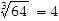
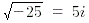
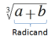
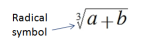
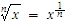
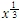

For example, the third root (also called the cube root) of 64 is 4, because if you multiply three fours together you get 64:

The above would be spoken as "the third root of 64 is 4" or "the cube root of 64 is 4".For every even-degree root (for example the 2nd, 4th, 6th ....) there are two roots. This is because multiplying two positive or two negative numbers both produce a positive result. For example, consider the square root of 9.
What number, multiplied by itself will produce 9?
Obviously 3 will work:
When there are two roots like this, unless stated otherwise we mean the positive one. So strictly speaking, when we write √4, we mean the positive root, +2. This is called the 'principal root'.
There are no real even-order roots of negative numbers. For example there is no real square root of -9, because -3 × -3 =+9, and +3 × +3 =+9 also. This applies to all even-order roots, 2nd (square) root, 4th root, 6th root and so on.
However, there are odd-order roots of negative numbers. For example –3 is a cube root of –27.
This is because
–3 × –3 × –3 = –27.
The first two terms when multiplied produce +9, then the next multiply is
+9 × –3 = –27.
This applies to all odd-order roots such as 3rd (cube) root, 5th root 7th root etc.
It states above that there is no real square root of a negative number. Note the word 'real'. What this is saying is that there is no real number that is the square root of a negative number.
However, in math and engineering we frequently have the need to find the square root of a negative number. To solve this, we introduce the idea of the 'imaginary' number. It involves the symbol i which stands for the square root of negative one. Or put another way, i2 = –1
In use , we can use it to express the square root of any negative number. For example

This means that the square root of –25 is the square root of +25 times the square root of negative one.For more on imaginary number see Imaginary numbers.

The thing you are finding the root of.
The √ symbol that means "root of". The length of the horizontal bar is important. See note below.Roots can also be written in exponent form. In general

So for example the cube root of x would be written
Which would be pronounced "x to the power of one third".